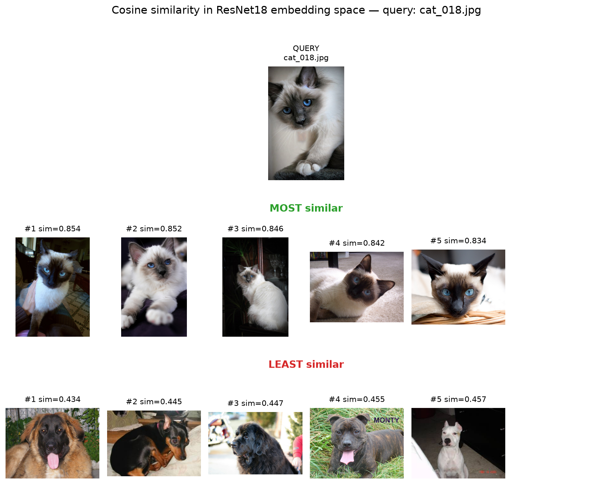

Similar-Image Retrieval
One image is randomly chosen as the query and its ResNet18 embedding is compared against the embeddings of the other 199 images using cosine similarity. The 5 most similar and 5 least similar images are shown together with the query.

KNN Classification on Unseen Images
The classifier was trained on the 200 ResNet18 embeddings from pets_sample (100 cats + 100 dogs). To see how well it generalizes, fresh test images were sampled from the Oxford-IIIT Pet dataset cache and verified to be content-distinct from the training set (md5 comparison). Every test image is shown with its predicted and ground-truth label; any misclassification is outlined in red.
Round 1 — 10 unseen images
First, the performance is visualized on 10 unseen images (5 cats + 5 dogs), highlighting any failed cases. All 10 images were classified correctly (100% accuracy), so there were no failed cases to mark.

Follow-up Validation on 40 Unseen Images
As a complementary check on the stability of the result, the test was repeated with a larger sample of 40 unseen images (20 cats + 20 dogs). The figure below shows every test image with predicted vs. ground-truth labels; any misclassification is outlined in red. All 40 images were classified correctly (100% accuracy, no misclassifications).